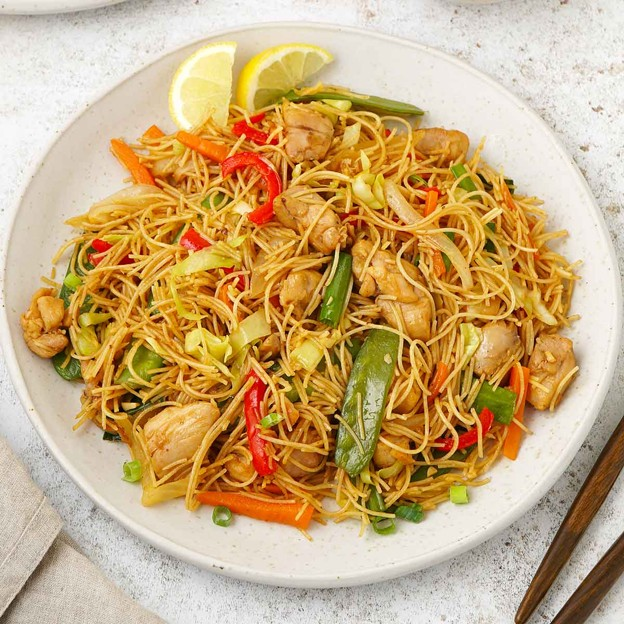

Chicken Adobo
A rich and savory Filipino favorite made with tender chicken and a soy-vinegar sauce.
25 min
Easy
Not sure what to cook with what's in your kitchen? Just enter the ingredients you have and let Recifix turn them into a delicious recipe. Find simple meal ideas based on what's already available, making cooking easier while helping reduce food waste.


Cook With Confidence
Enter what you have and discover recipes you can make right now.
Get ideas fast—no more browsing for what to cook tonight.
See every ingredient and the exact amount you need.
Choose your taste and find recipes that match your mood.
Save favorites so you can cook them again in seconds.
Follow simple steps from prep to serving— no confusion.
Tell Recifix what you have, set your preferences, and get a recipe ready to cook.
Tell Recifix what ingredients you already have in your kitchen.
Choose your taste preferences and allergy restrictions.
Recifix creates a recipe you can follow and cook right away.
Find meals that fit your schedule, from quick snacks to full dishes.
Follow clear steps from preparation to serving without the confusion.
Use the ingredients already in your kitchen instead of letting them go unused.
A few favorite dishes to inspire your next meal.
A rich and savory Filipino favorite made with tender chicken and a soy-vinegar sauce.
A comforting sour soup filled with tender pork and fresh vegetables.

Flavorful rice noodles tossed with tender chicken and crisp vegetables.
Have a question or want to share feedback? Send us a message and we'll get back to you.